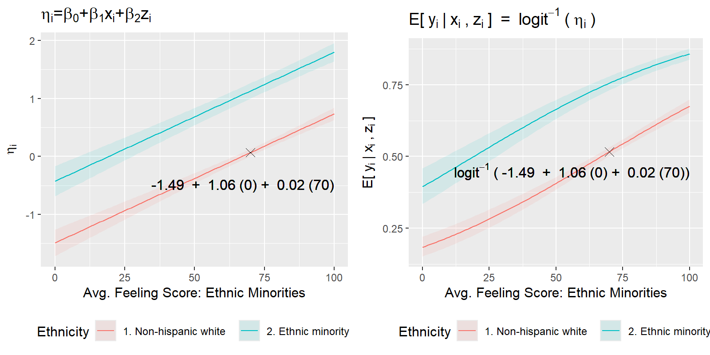
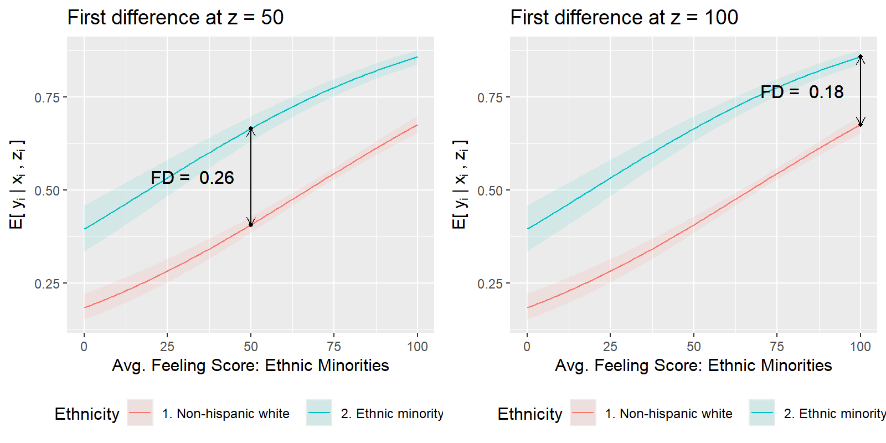
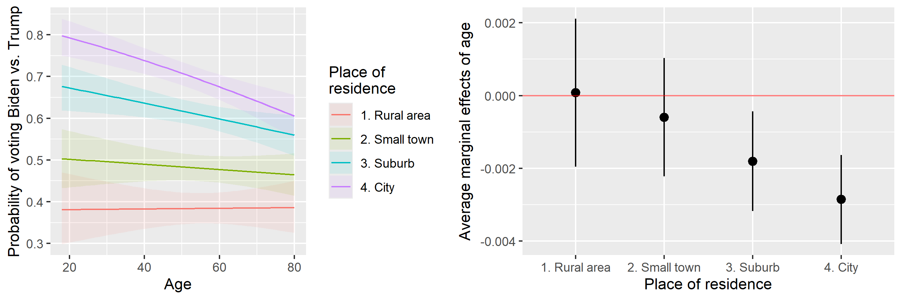
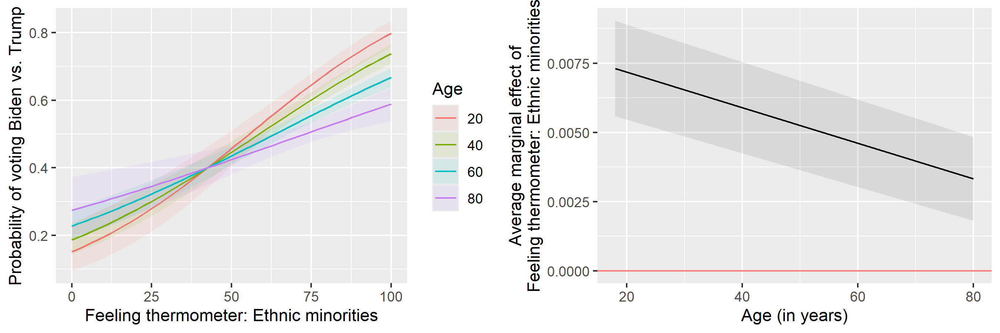

Overview
What is brms?
The brms package provides an interface to fit Bayesian generalized (non-)linear multivariate multilevel models using Stan. The formula syntax is very similar to that of the package lme4 to provide a familiar and simple interface for performing regression analyses.
It was created and is being maintained by Paul Bürkner. It is extensively documented on its own website.
Comparison: Pre-implemented model types

Source: Bürkner, Paul-Christian (2022). brms: An R Package for Bayesian Multilevel Models using Stan.
Note: This table is from a 2022 publication. Newer versions
of brms handle missing
values.
brms vignettes as an indication of its versatility
General
Model types
A function call to brms
lm_brms <- brms::brm(
sup_afd ~ # outcome
la_self, # predictor
data = gles, # data
family = gaussian(link = "identity"), # family and link
chains = 4L, # number of chains
iter = 2000L, # number of iterations per chain
warmup = 1000L, # number of warm-up samples per chain
algorithm = "sampling", # algorithm (HMC/NUTS)
backend = "rstan", # backend (rstan)
seed = 20231123L # seed
)What happens under the hood

Linear model
Likelihood
The linear model stipulates that the observed outcomes \(y_i\) for every unit \(i\) can be expressed as realizations from a normal distribution with unit-specific mean or location parameter \(\mu_i\) and a constant (i.e., general) variance or scale parameter \(\sigma^2\).
\[y_i \sim \text{N}(\mu_i, \sigma^2) \text{ for all }i = 1,...N\]
or, alternatively,
\[y_i = \mu_i + \epsilon_i \text{ for all }i = 1,...N \\ \epsilon_i \sim \text{N}(0, \sigma^2)\]
The latter notation makes explicit that each observed \(y_i\) can be thought of as a combination of a systematic component, \(\mu_i\), and a stochastic error component, \(\epsilon_i\), which follows a zero-mean normal distribution with constant variance \(\sigma^2\).
The systematic component
The systematic component is represented by the mean parameter \(\mu_i\). In fact, \(\mu_i\) is merely a transformed parameter: It is a linear function of unit-specific data \(\mathbf{x}_i\) and coefficients \(\beta\).
The formula below illustrates this, using the row vector notation \(\mathbf{x}_i^{\prime} \beta\) as shorthand for the scalar notation \(\beta_1 + \beta_2 x_{i, 2} + ...+\beta_k x_{i,k}\).
\[\mu_i = \underbrace{\mathbf{x}_i^{\prime} \beta}_{= \beta_1 + \beta_2 x_{i, 2} + ...+\beta_k x_{i,k}} \text{ for all }i = 1,...N\]
Parameters and priors
In the linear model, all coefficients \(\beta\) as well as the variance \(\sigma^2\) are model parameters.
In Bayesian analysis, we must assign them priors (though
brms, like Stan, will assign default uniform priors if we
do not explicitly specify priors).
Data
We model respondents’ support for the AfD (sup_afd,
measured on an 11-point scale ranging from -5 to 5) as a function of
respondents’ pro-redistribution preferences (se_self) and
anti-immigration preferences (la_self), a multiplicative
interaction term between the two, and some controls: Gender
(fem), age (age), and East/West residence
(east).
Both se_self and la_self are measured on
11-point scales:
se_selfranges from values (0) “less taxes and deductions, even if that means less social spending” to (10) “more social spending, even if that means more taxes and deductions”.la_selfranges from values (0) “facilitate immigration” to (10) “restrict immigration”.
The model formula is given by
\[ \mathtt{sup\_afd}_i = \\\beta_1 + \beta_2 \mathtt{se\_self}_i + \beta_3 \mathtt{la\_self}_i + \\ \beta_4 \mathtt{fem}_i + \beta_5 \mathtt{east}_i + \beta_6 \mathtt{age}_i + \\ \beta_7 \mathtt{se\_self}_i \times \mathtt{la\_self}_i + \epsilon \]
Fitting
Choosing priors
brms uses default priors for certain “classes” of
parameters. To check these defaults, we need to supply the model
formula, data, and generative model (i.e., family and link function) to
brms::get_prior().
# Get default priors
default_priors <- brms::get_prior(
sup_afd ~ # outcome
la_self * # immigration preferences
se_self + # redistribution preferences
fem + # gender
east + # east/west residence
age, # age
data = gles, # data
family = gaussian(link = "identity") # family and link
)
default_priorsNote: Missing entries in the prior column
denote flat/uniform priors.
Define custom priors
If we don’t like the default priors, we can create a
brmsprior object by specifying the desired distributional
properties of parameters of various classes:
custom_priors <- c(
brms::prior(normal(0, 5), class = b), # normal slopes
brms::prior(normal(0, 5), class = Intercept), # normal intercept
brms::prior(cauchy(0, 5), lb = 0, class = sigma) # half-cauchy SD
)
custom_priorsLet’s think about these values intuitively. How informative/vague are our priors?
Prior predictive checks: Fitting
lm_brms_prior_only <- brms::brm(
sup_afd ~ # outcome
la_self * # immigration preferences
se_self + # redistribution preferences
fem + # gender
east + # east/west residence
age, # age
data = gles, # data
family = gaussian(link = "identity"), # family and link
prior = custom_priors, # priors
sample_prior = "only", # samply only from prior
chains = 2L, # number of chains
iter = 1000L, # number of iterations per chain
warmup = 0L, # number of warm-up samples per chain
algorithm = "sampling", # algorithm (HMC/NUTS)
backend = "rstan", # backend (rstan)
seed = 20231123L # seed
)Check model predictions vis-à-vis empirical distribution of outcome
brms::pp_check(
lm_brms_prior_only,
ndraws = 100,
type = "dens_overlay"
) +
ggplot2::xlim(-150, 150)
Fitting the model
Lastly, we can fit the model using brms::brm().
Note: Model compilation and estimation may take a while.
lm_brms <- brms::brm(
sup_afd ~ # outcome
la_self * # immigration preferences
se_self + # redistribution preferences
fem + # gender
east + # east/west residence
age, # age
data = gles, # data
family = gaussian(link = "identity"), # family and link
prior = custom_priors, # priors
chains = 4L, # number of chains
iter = 2000L, # number of iterations per chain
warmup = 1000L, # number of warm-up samples per chain
algorithm = "sampling", # algorithm (HMC/NUTS)
backend = "rstan", # backend (rstan)
seed = 20231123L # seed
)Summarize and diagnose
Model summary and generic diagnostics
First, we print the model summary. We can check Rhat for
any signs of non-convergence.
lm_brms## Family: gaussian
## Links: mu = identity; sigma = identity
## Formula: sup_afd ~ la_self * se_self + fem + east + age
## Data: gles (Number of observations: 1321)
## Draws: 4 chains, each with iter = 2000; warmup = 1000; thin = 1;
## total post-warmup draws = 4000
##
## Regression Coefficients:
## Estimate Est.Error l-95% CI u-95% CI Rhat Bulk_ESS Tail_ESS
## Intercept -3.81 0.43 -4.63 -2.95 1.00 2719 2473
## la_self 0.30 0.05 0.20 0.41 1.00 2474 2331
## se_self -0.12 0.06 -0.25 0.01 1.00 2575 2151
## fem1 -0.59 0.14 -0.87 -0.32 1.00 4804 2719
## east1 0.42 0.15 0.14 0.71 1.00 4394 2740
## age -0.01 0.00 -0.02 -0.01 1.00 5887 3038
## la_self:se_self 0.01 0.01 -0.01 0.03 1.00 2483 2183
##
## Further Distributional Parameters:
## Estimate Est.Error l-95% CI u-95% CI Rhat Bulk_ESS Tail_ESS
## sigma 2.44 0.05 2.36 2.53 1.00 5010 3136
##
## Draws were sampled using sampling(NUTS). For each parameter, Bulk_ESS
## and Tail_ESS are effective sample size measures, and Rhat is the potential
## scale reduction factor on split chains (at convergence, Rhat = 1).Visual diagnostics
Let’s explore the following visualizations of common generic diagnostics:
brms::mcmc_plot(lm_brms, type = "rhat") # Gelman-Rubin
brms::mcmc_plot(lm_brms, type = "acf") # Autocorrelation
brms::mcmc_plot(lm_brms, type = "trace") # Trace plotsSee help(mcmc_plot) for additional types of plots.
Algorithm-specific diagnostics
Note: We rely on the check_hmc_diagnostics() function
from the rstan package. To ensure it works, we must extract
the stanfit object nested in our brmsfit
object via lm_brms$fit.
rstan::check_hmc_diagnostics(lm_brms$fit)What if I find signs of non-convergence?
The standard answer is: Increase the length of your chains. It may especially help with warnings about Rhat, ESS, and low BFMI.
But this is not always the optimal strategy, and it may not solve your problem.
So, suppose that after running longer chains, one or several of the following still apply:
- Your algorithm-specific diagnostics throw warnings (that won’t go away)
- Your convergence diagnostics indicate signs of non-convergence (and increasing the warm-up period doesn’t help)
- Your algorithm is painfully slow
Dealing with non-covergence and computational problems
Here are some answers, partly based on Gelman et al. (2020) and the Stan Development Team’s guide Runtime warnings and convergence problems:
- Do read Runtime warnings and convergence problems. It can help you understand a specific problem and potential solutions.
- Do you get algorithm-specific warnings about
divergences/max_treedepth? Adjust the HMC/NUTS control arguments
adapt_delta,stepsize, and/ormax_treedepth. - Check if your model is well specified (e.g., do you have problems of separation in logistic regression?)
- Adopt an efficient workflow for debugging:
- Reduce model complexity. Start with a simpler specification, gradually build up. See where things start to go wrong.
- Use smaller sets of data, few chains, and short runs.
- Optimize priors:
- If you use custom priors: Do your priors allow for posterior density in regions where you’d expect it?
- If you use default flat or very vague priors: Use stronger priors (within reason)
Presentation
Vincent AB’s universe
Vincent Arel-Bundock has authored and maintains an excellent collection of R packages for the post-estimation presentation of statistical results, including:
modelsummary: Beautiful, customizable, publication-ready data and model summaries in Rmarginaleffects: R package to compute and plot predictions, slopes, marginal means, and comparisons
These packages not only come with incredible flexibility (see the links for details) but also apply to countless classes of statistical models in R (including both frequentist/likelihood-based and Bayesian models).
Tables
modelsummary::modelsummary(
list("Model 1" = lm_brms),
statistic = c("SD" = "({std.dev})",
"95% CI" = "[{conf.low}, {conf.high}]"),
coef_rename = c(
"b_Intercept" = "Intercept",
"b_la_self" = "Anti-immigration",
"b_se_self" = "Pro-redistribution",
"se_self" = "Pro-redistribution",
"sigma" = "σ"
),
coef_omit = c("fem1|east1|age"),
gof_map = "nobs",
conf_level = 0.95,
centrality = "mean",
output = "flextable",
align = "lc",
title = paste(
"Bayesian linear regression of AfD support on preferences for",
"immigration restriction and redistribution."
),
notes = paste(
"Posterior means with posterior standard deviations and",
"95% credible intervals in parentheses.",
"Background covariates (omitted from table): age, gender, East/West."
)
) %>%
flextable::autofit()
| Model 1 |
|---|---|
Intercept | -3.815 |
(0.428) | |
[-4.633, -2.952] | |
Anti-immigration | 0.304 |
(0.054) | |
[0.196, 0.410] | |
Pro-redistribution | -0.120 |
(0.065) | |
[-0.250, 0.006] | |
Anti-immigration:Pro-redistribution | 0.012 |
(0.009) | |
[-0.006, 0.030] | |
σ | 2.442 |
(0.045) | |
[2.356, 2.532] | |
Num.Obs. | 1321 |
Posterior means with posterior standard deviations and 95% credible intervals in parentheses. Background covariates (omitted from table): age, gender, East/West. | |
Quantities of interest (QOIs) – a refresher
- Expected values: Predicted levels of the outcome
variable
- For hypothetical observations
- Over the values of a focal predictor, holding all else constant
- Average first differences: Effects of categorical
predictors
- For binary comparisons
- For multi-group comparisons** \(\rightarrow\) pairwise binary comparisons
- Average marginal effects: Effects of continuous predictors
QOI example: logistic regression
Here, you see a visualization of a logistic regression of voting for Joe Biden (\(y=1\)) as opposed to Donald Trump (\(y=0\)) in the 2020 US Presidential Election as a function of two predictors: respondents’ ethnicity and their average feelings towards various ethnic minority groups (rated on a scale from 0 “cold” to 100 “warm”.

The left-hand side shows the linear component, a linear function of the coefficient estimates and chosen predictor values.
The right-hand side shows the expected values, which result from applying the inverse link function to this linear function.
The X marks a hypothetical observation: a non-hispanic white respondent who feels moderately warm towards ethnic minorities.
QOI example: first differences

The plots illustrate observation-level first differences in the probability of voting for Biden instead of Trump that result from a counterfactual comparison of ethnic minority vs non-hispanic white respondents.
In generalized linear models, observation-level first differences are sensitive to the choice of background covariate values (here: feelings towards ethnic minorities).
The average first difference takes the sample average of all observation-level first differences, thereby averaging over the variation induced by different covariate values.
QOI example: conditional effects (discrete interaction effects)

Here, we see the effect of age on the probability of voting Biden vs. Trump, conditional on a discrete moderator, respondents’ place of residence (four categories).
On the left, we see the expected values. We see that support for Biden is generally lower in rural than in urban areas. Furthermore, the dependence of vote choice on age is greater in urban than in rural places: the prediction curve is flat in rural areas and downward-sloping in cities. This is also shown on the right-hand side, where we see the respective average marginal effects.
QOI example: conditional effects (gradual interaction)

Lastly, we see the effect of respondents’ feeling towards ethnic minorities on the probability of voting Biden vs. Trump, conditional on a continuous moderator, respondents’ age (in years).
On the left, we see the expected values, conditional on four exemplary values of the moderator. We see that the dependence of vote choice on feelings towards ethnic minorities decreases with age: the prediction curve is steepest for young respondents and flattest for old respondents. This is also shown on the right-hand side, where we see a gradual decline in the positive average marginal effect.
Application: marginaleffects
The marginaleffects
package (“Predictions, Comparisons, Slopes, Marginal Means, and
Hypothesis Tests”), allows users to “compute and plot predictions,
slopes, marginal means, and comparisons (contrasts, risk ratios, odds,
etc.) for over 100 classes of statistical and machine learning models in
R”.
A few years ago, compatibility with brms models was
added.
Below, we apply the package commands to our model,
lm_brms, which includes a continuous interaction
effect.
Conditional expected values
marginaleffects::plot_predictions(
lm_brms,
condition = list("la_self", # Main predictor
"se_self" = c(0, 5, 10)) # Exemplary values of moderator
) +
ggplot2::labs(x = "Anti-immigration preferences",
y = "AfD Support",
col = "Pro-redistribution\npreferences",
fill = "Pro-redistribution\npreferences")Conditional marginal effects
marginaleffects::plot_slopes(lm_brms,
variable = "la_self",
condition = "se_self") +
ggplot2::xlab("Pro-redistribution preferences") +
ggplot2::ylab(
paste(
"Marginal effect of anti-immigration",
"preferences on AfD support",
sep = "\n"
)
)Which substantive conclusions can we draw?
Further reading
See the marginaleffects Case Study 8:
Bayes for a complete overview of the package’s compatibility with
brms.
Posterior predictive checks
Posterior predictive checks involve simulating the data-generating process to obtain replicated data given the estimated model. They can help us determine how well our model fits the data.
This usually involves two questions:
- Does the family yield an adequate generative model?
- Does a Gaussian (normal) data-generating processes produce realistic
replications of the observed values of
sup_afd(support for the AfD on the -5 to +5 scale)? - Does the simulated distribution of the replications match the observed distribution of the outcome in the sample?
- Does a Gaussian (normal) data-generating processes produce realistic
replications of the observed values of
- Does the systematic component accurately predict outcomes?
- Do our predictors accurately predict which individuals are more likely to support the AfD?
- How large is the observation-level discrepancy between simulated replications and observed data?
Distributional congruence
To check whether the generative model produces distributions of
replicated outcomes that match the distribution of the observed outcome,
we can compare the density of the observed outcome with those of, say,
ndraws = 100 simulations. Each simulation is based on one
post-warm-up sample from the posterior distribution.
brms::pp_check(lm_brms, ndraws = 100, type = "dens_overlay")
So, what do you think?
Observation-level prediction error
To check the predictive accuracy of the model, we can investigate the distribution of observation-level prediction errors. A model with perfect fit would produce an error of \(0\) for all \(N\) observations.
Below, you see the distribution of errors for our linear model. What do you think?
brms::pp_check(lm_brms, ndraws = 1, type = "error_hist")
Comparison: the model as a zero-one-inflated beta (ZOIB) regression
Zero-one-inflated beta (ZOIB) regression models bounded continuous outcomes on the unit (i.e., \([0,1]\)) interval.
The ZOIB model is a GLM with a multi-family likelihood, meaning that its likelihood is composed of a mixture of several constitutive likelihoods. Specifically, it supplements a beta pdf for values \(y \in ]0, 1[\) with additional pmfs for the boundary values \(y \in \{0,1\}\).
To model a bounded continuous outcome on the unit interval, we must transform the scale of AfD support to range from 0 to 1 (with midpoint 0.5) instead of -5 to +5 (with midpoint 0), but we will scale it back later on.
We first observe the distributional congruence of the ZOIB-generated outcome simulations.
brms::pp_check(zoib_brms, ndraws = 100, type = "dens_overlay")
We then turn to checking observation-level prediction errors.
brms::pp_check(zoib_brms, ndraws = 1, type = "error_hist")
What do you conclude? Does the ZOIB-family accurately model the observed sample-level distribution of the outcome? Are you happy with the predictive accuracy of our current systematic component?